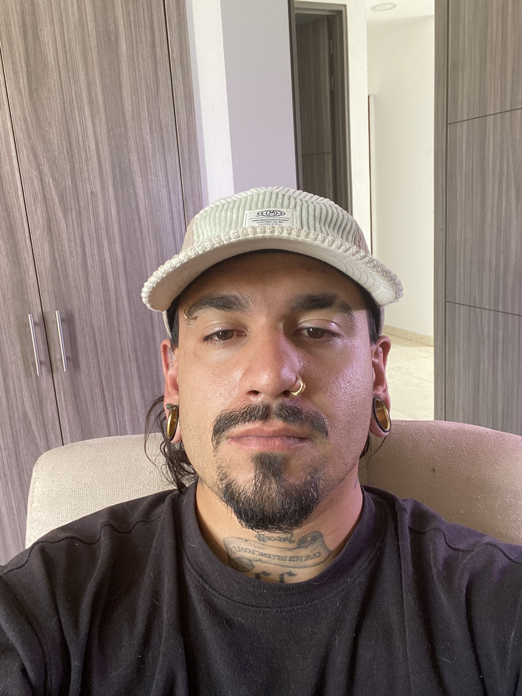

Juan David Pareja Quintero
Estudiante de Desarrollo Web Full Stack
Acerca de mi
Soy una persona emprendedora, guiada siempre hacia la tecnologia pues siempre ha sido mi mas fuerte. Los videojuegos, los computadores, en si toda la tecnologia desde siempre ha sido atractiva para mi. Estudie dos semestres de Trabajo Social, dos semestres de Administracion de Empresas, hice unos cursos para hacer trading e inverti dinero en ello. Luego me puse a estudiar Marketing Digital para hacer publicidad a empresas, estudie edicion de video, edicion de fotos y Fotografia en si. En todo esto fui aprendiendo mas cosas, pues se hacer paginas web por medio de plantillas, aprendi bastante joven a cambiarles el sistema operativo a celulares, cambiarles cosas del sistema y demas. Aparte aprendi tambien varios trucos para mis consolas, programarlas y demas aunque hace tiempo no lo hago, pues ya uno se dedica a trabajar y deja las pasiones a un lado. Ahora que me vine a Bogota buscando estudio y aparte algo que me gustara, encontre este bootcamp con el cual quiero conseguir un trabajo para aprender cada vez mas e irlo aplicando a modelos de negocio que quiero tener.
Proyectos
Mi Portafolio Personal
Este portafolio que vez aqui es mi primer proyecto como estudiante de Desarrollo Web Full Stack de BIT. Lo contrui desde cero usando HTML Y CSS, aplicando lo aprendido en las primeras clases del curso: estructura semantica, estilos, diseño responsivo y buenas practicas de codigo.
Contacto
¿Quieres comunicarte conmigo? puedes encontrarme en:
- Email charmin990530@gmail.com
- Whatsapp Escribeme por Whatsapp
- GitHub github.com/charmin990530-sudo